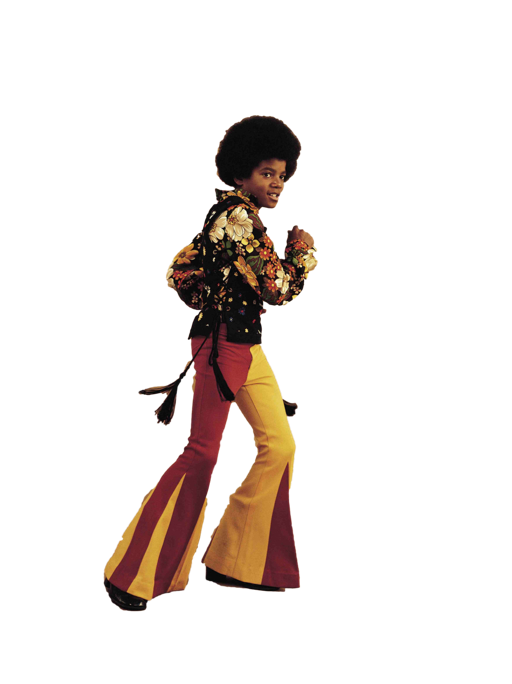

Mais Vendido: Lançado em 1982, Thriller permanece como o álbum mais vendido de todos os tempos, com estimativas de mais de 70 milhões de cópias comercializadas globalmente.
Inovação Visual: Seus videoclipes para músicas como "Billie Jean", "Beat It" e "Thriller" foram cruciais para quebrar barreiras raciais na MTV e elevar o meio a uma forma de arte cinematográfica.
Danças Icônicas: Jackson popularizou movimentos que se tornaram sua marca registrada, como o Moonwalk, o Robô e a inclinação anti-gravidade.
Recordes: Ele detém 39 recordes no Guinness World Records, venceu 13 prêmios Grammy (incluindo o recorde de 8 em uma única noite em 1984) e foi induzido duas vezes ao Rock and Roll Hall of Fame.
- Sobre a carreira -


Pessoal e Controvérsias
Apesar do sucesso sem precedentes, sua vida foi marcada por intensa escrutinação pública sobre sua aparência física e saúde (incluindo o diagnóstico de vitiligo e lúpus). Na década de 1990 e início dos anos 2000, Jackson enfrentou graves acusações de abuso sexual infantil, sendo absolvido de todas as queixas em um julgamento em 2005.
Morte e Legado Póstumo
Michael Jackson faleceu em 25 de junho de 2009, aos 50 anos, devido a uma parada cardíaca causada por intoxicação aguda pelo anestésico propofol. Sua morte foi considerada homicídio, resultando na condenação de seu médico pessoal, Conrad Murray, por homicídio culposo. Mesmo após sua morte, seu impacto cultural continua vasto:Cultura Popular: Seu legado é celebrado em produções como o documentário This Is It e o musical da Broadway MJ The Musical.
Filantropia: Doou cerca de US$ 500 milhões para caridade ao longo da vida, estabelecendo padrões para o apoio de celebridades a causas humanitárias.